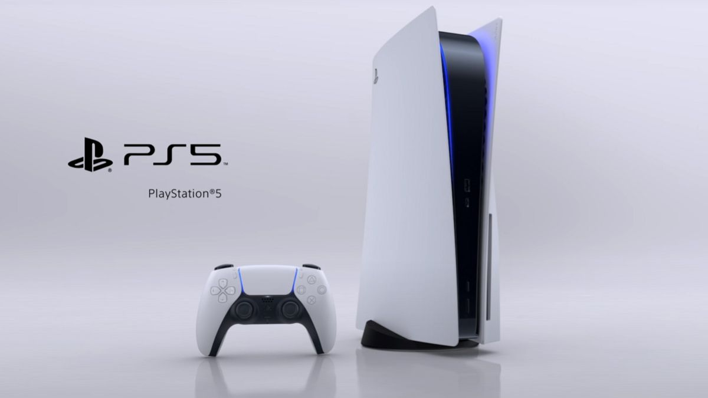
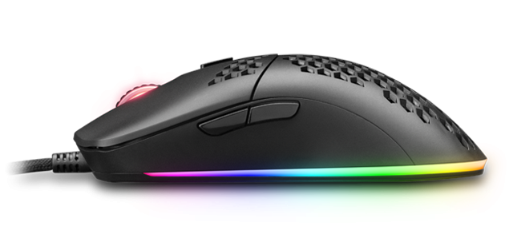

¿Tienes dudas?
Si tu problema es que no sabes si lo que te esta vendidendo te gustara o no, aqui te dejo
los mejores productos segun lo que dice la gente, seguro que nuestros productos te gustaran.
Juegos
Grant Theft Auto 5
El Grant Theft Auto 5 o GTA5 es el juego mejor valorado de nuestra pagina con diferencia y es normal
debido a todas las libertades que deja para los jugadores.
Consta de un modo historia donde controlas a 3 personajes distintos por las calles de los angeles
mientras poco a poco vas tomando deciciones de que es lo que quieres hacer hasta que al final
dependiendo
de las deciciones tomadas por ti optas a un posible final de la historia u otra.
Pero eso no es lo mejor del juego, su verdadero potencial se enceuntra en el modo online donde te puedes
unir hasta con 30 amigos en las calles de Los Angeles para crear tu propia vida, comprar vehiculos,
comprar
casas, crear tus propios negocios... Y es que este juego es conocido sobretodo por todas las libertades
que deja
para los jugadores.
30€ Ahora 20€
Ver
mas informacion del articulo
Pcs Gaming
MILLENIUM ANIVIA
El Pc Gaming mejor valorado es el MILLENIUM ANIVIA debido seguramente a dos cosas:
La primera es que es un ordenador potente que puede durarte varios años sin tener que hacer reparaciones
o grandes actualizaciones costosas en cuanto a los componentes que tiene instalados y aun asi podra
soportar buenos graficos y tendra un buen rendimiento.
Lo segundo creo que es mas que evidente y es el precio ya que para lo que ofrece este ordenador esta
muy bien de precio y si no tienes mucha idea de motar ordenadores este ya te vendrá montado.
800€
Ver mas informacion del articulo
Consolas
Playstation 5

Aunque recien salida la Playstation 5 ya es nuestra consola con mejor valoracion
Al ser una consola recien salida es consola durara por los siguientes años sin dificultades ninguna, ni
reparaciones, ni recambio de piezas, sin problemas de compatibilidad y por si no fuera poco bastantes juegos
exclusivos que solo se pueden jugar en esta consola.
Por no hablar de que podras acceder a juegos con buena calidad ya un buen rendimiento sin tener que gastarte
dinero en un Pc Gaming.
400€
Ver
mas informacion del articulo
Perifericos
MARS GAMING MOUSE

El periferico con mejor valoracion es el Mars Gaming Mouse.
Velocidad, control y precisión: todo lo que se necesita para disfrutar de un gameplay profesional,
está a tu alcance con este raton. Tiene una innovadora estructura de diseño Hive y un sensor óptico
de hasta 12400 DPI, este periférico te proporciona las herramientas perfectas para poder disfrutar
de este mundo.
27€
Ver
mas informacion del articulo